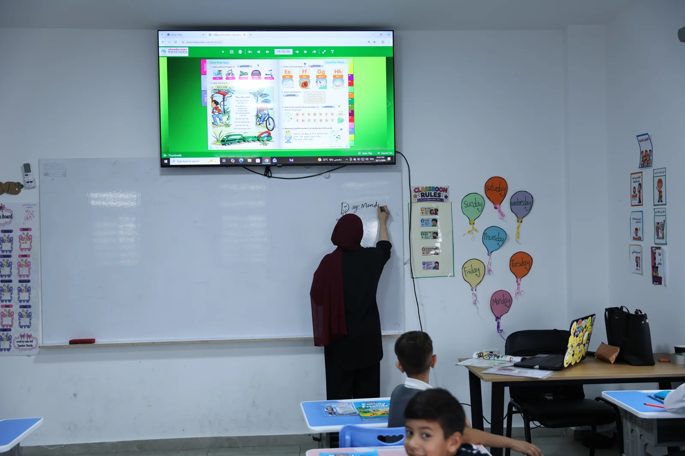
1 / 4اللغة تفتح الآفاق.
اهتمام بتطوير مهارات الإنجليزية وثقة الطفل في استخدامها للتعلّم والتواصل.
مكان نتعلّم فيه، نكتشف، وننمو.
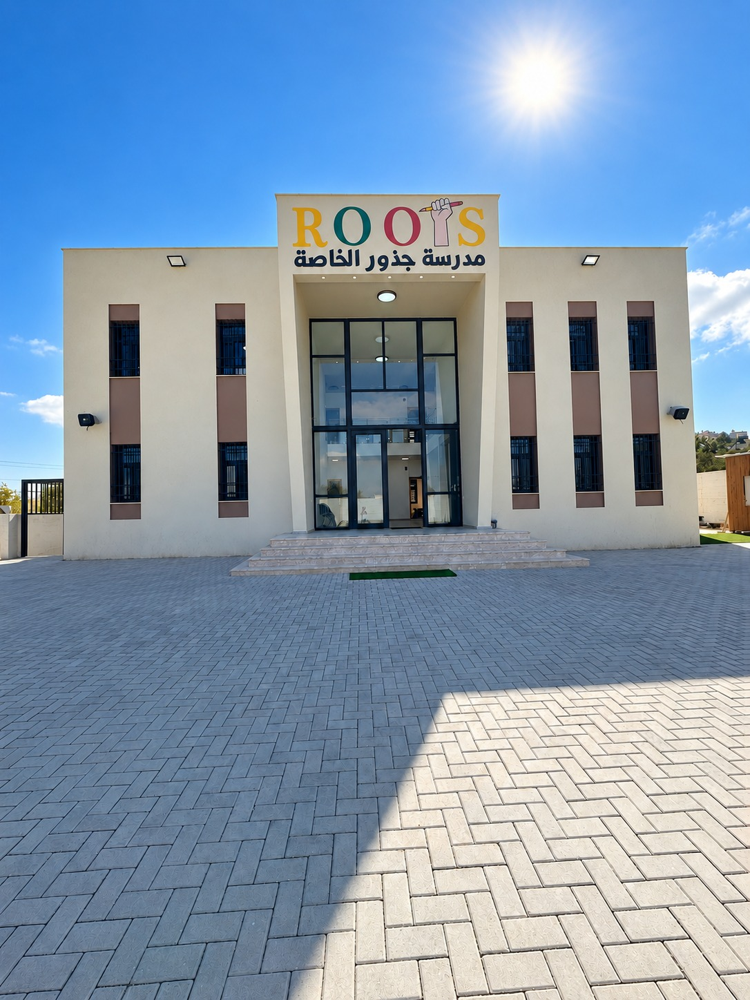
أهلًا بكم في Rootsبداية صغيرة، وإمكانات كبيرة.
في Roots، نريد للتعلّم أن يكون رحلة يعيشها الطفل بالفضول والتجربة والإبداع. نولي اهتمامًا باللغة الإنجليزية، وبالعلاقة الدافئة بين المعلمات والأطفال.
تعرّف على ما يميّزنا ↓نوفر المواصلات من كفل حارس وديرستيا وحارس وقيرة وزيتا وجماعين، لتسهيل وصول الأطفال إلى المدرسة.
المناطق والأسعار ↗مساحة للتعلّم، وعناية بكل خطوة.
أرقام واردة في خطة المدرسة؛ تُراجع قبل النشر.
التفاصيل الصغيرة تصنع فرقًا في يوم الطفل.

1 / 4اهتمام بتطوير مهارات الإنجليزية وثقة الطفل في استخدامها للتعلّم والتواصل.
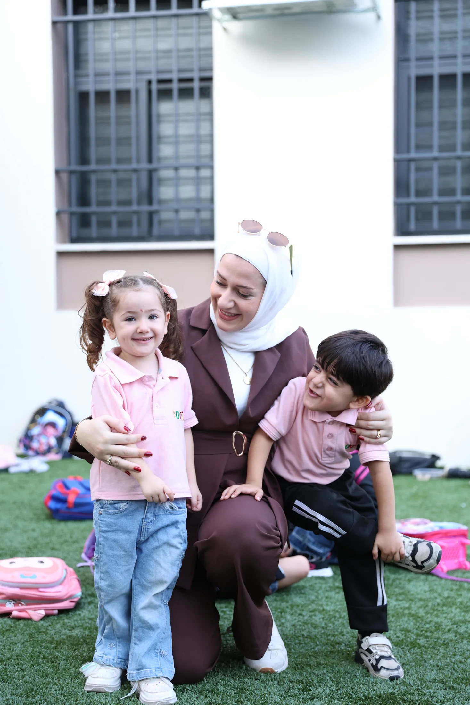
1 / 4علاقة دافئة بين المعلمات والأطفال، ورعاية تدعم رحلتهم اليومية.
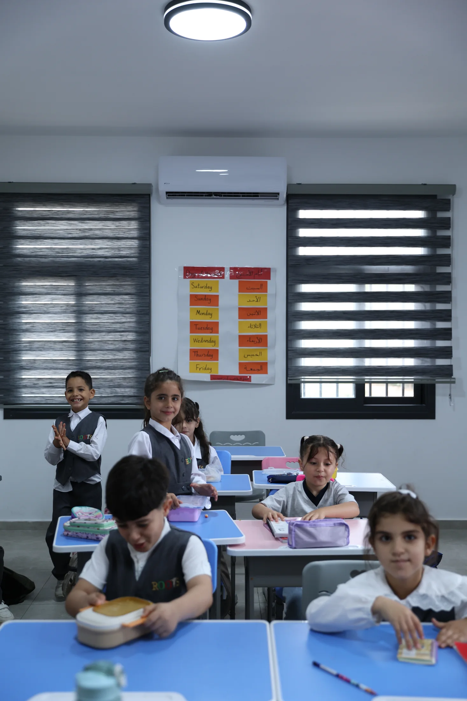
1 / 4شاشة ومكيف في كل غرفة صفية، وغرفة حاسوب تدعم التجربة التعليمية.
رحلة Roots: اكتشف، تعلّم، ابتكر، انمُ.
كل سؤال بداية. نفتح المجال لفضول الطفل وملاحظاته.
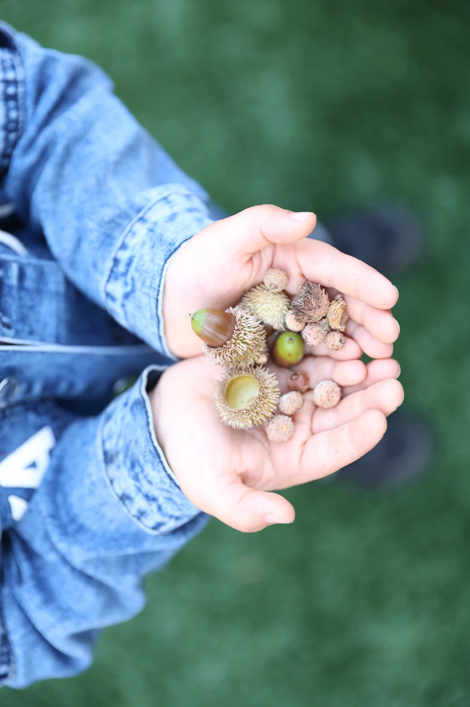
1 / 3نبني المعرفة بالتجربة والمشاركة، خطوة بخطوة.
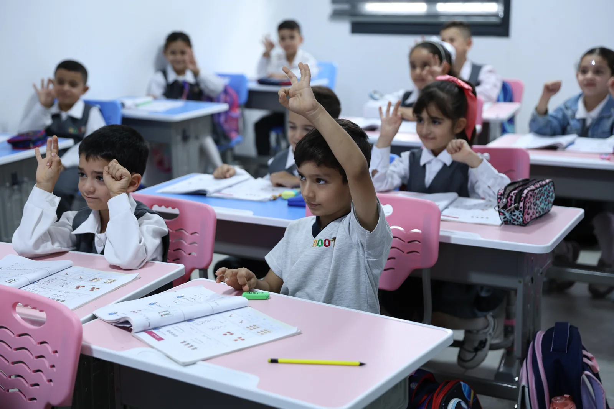
1 / 3نمنح الأفكار مساحة، والمحاولة قيمة.
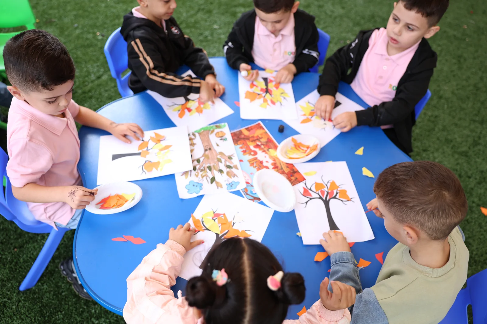
1 / 3مع كل تجربة، تنمو المهارات والثقة وحب التعلّم.
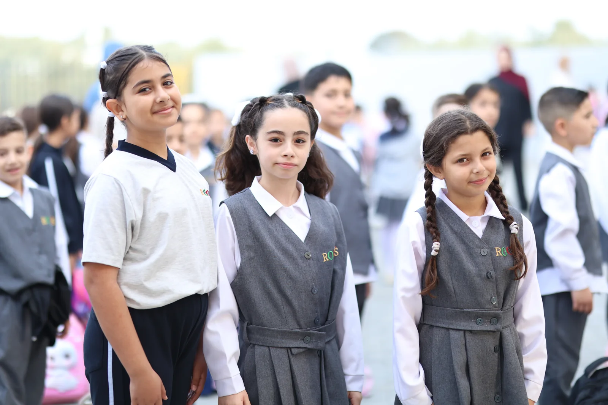
1 / 4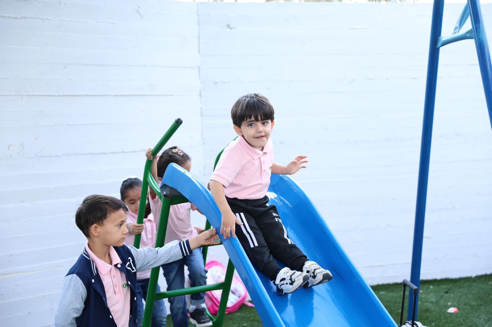
1 / 5للطفولة مساحة هنا.
في ساحة المدرسة ومساحاتها الخارجية، نكتشف جانبًا آخر من التعلّم: الحركة، واللعب، والتفاعل مع الأصدقاء.
لقطات من يوم المدرسة، داخل الصف وخارجه.
لقطات من شرح المعلمة ومشاركة الأطفال.
لقطات قصيرة بدون صوتتفاصيل من أعمال الأطفال وألوانهم.
لقطات قصيرة بدون صوتجولة في غرفة الحاسوب وتجهيزاتها.
لقطات قصيرة بدون صوتتعلّم، لعب، وأصدقاء. لحظات من مدرستنا.
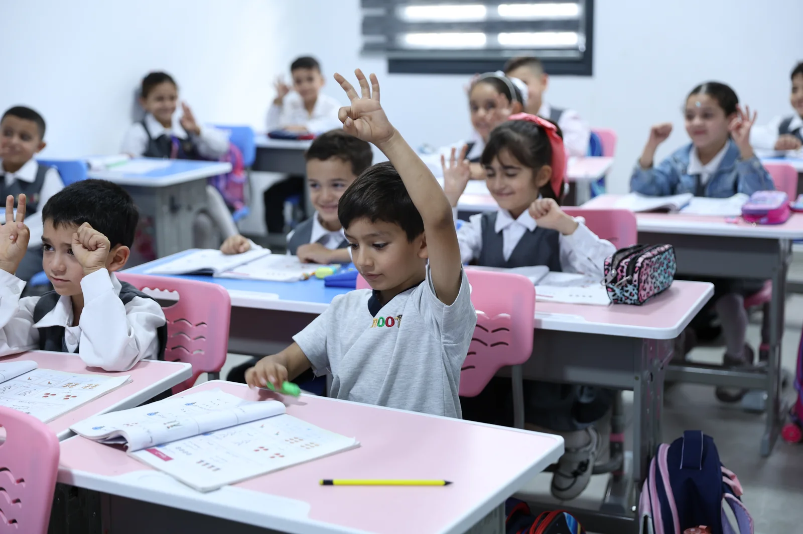
1 / 3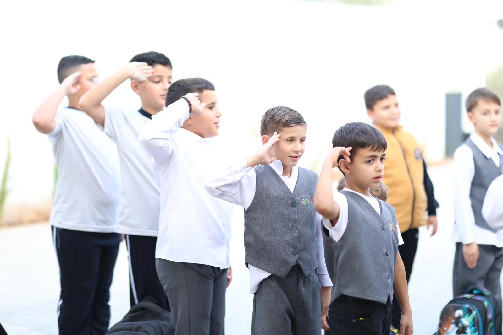
1 / 3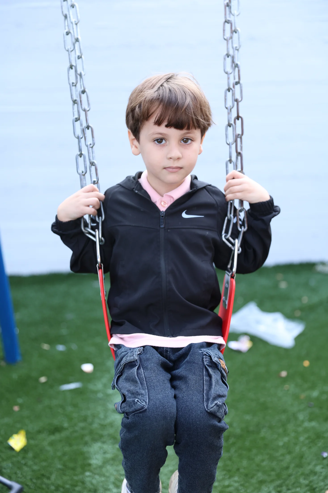
1 / 3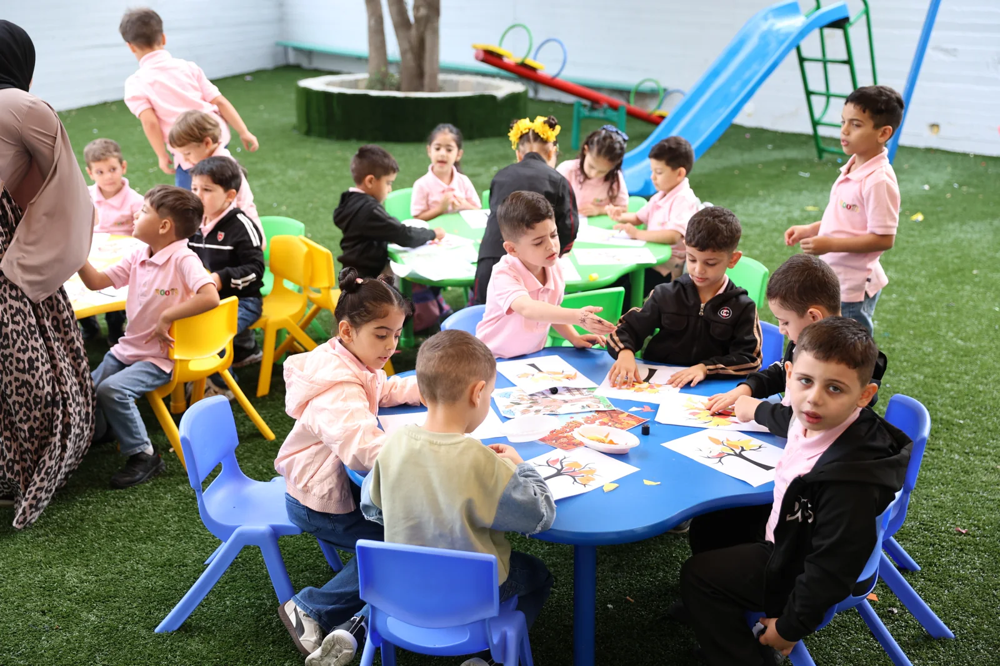
1 / 3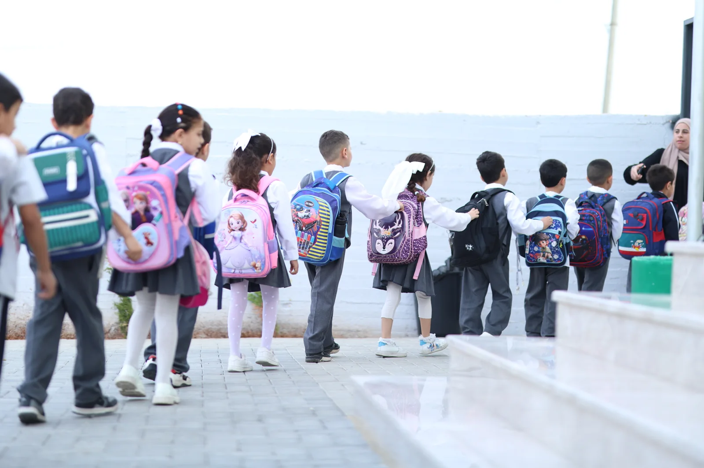
1 / 3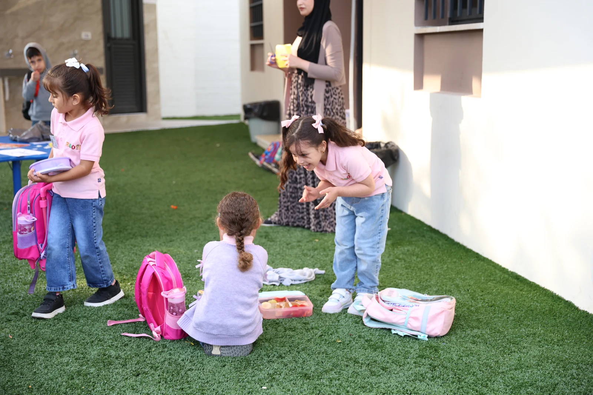
1 / 4كل بداية تحتاج خطوة. تعرّفوا على إجراءات الانضمام إلى Roots.
كيف نسجّل؟ ↗كل ما تحتاجونه لبداية جديدة في جذور.
جاهزون للتسجيل؟ تواصلوا معنا لتأكيد التفاصيل وحجز المقعد.
تواصل عبر واتساب ↗نحب أن تبدأ الحكاية بالتعارف.